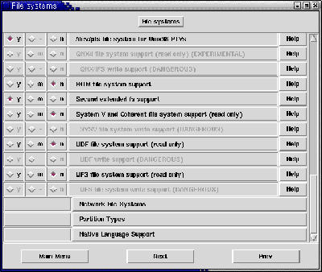

[successivo] [precedente] [inizio] [fine] [indice generale] [hall of fame] [indice analitico] [parte]
10.1.1) Quali sono i comandi comuni per masterizzare con GNU/Linux?
Per masterizzare file o directory occorre prima includerli in una struttura che abbia un file system adatto per il supporto (CD-ROM) destinazione. Questa struttura si chiama immagine e si crea con il comando mkisofs:
# mkisofs -a -r -v -T -o ~/immagine.img /doc [Invio]
Questo comando creerà (-o) un'immagine chiamata immagine.img nella directory personale (~) della directory /doc/ e delle sue sottodirectory, utilizzando un file system ISO 9660 con estensioni Rock Ridge. Quest'ultimo (utilizzato grazie all'opzione -r) permetterà di mantenere i permessi dei file e i nomi lunghi. Lo standard ISO 9660 gestisce solamente nomi di file costituiti da 8 caratteri per il nome e 3 per le estensioni. Le altre opzioni servono ad avere informazioni sul processo (-v), ad includere anche i file nascosti (-a) e a creare il file TRANS.TBL per la conversione (-T) qualora si utilizzi il CD-ROM in un sistema con nomi di caratteri 8+3.
In seguito si potrà montare l'immagine per verificare che sia stata creata correttamente:
# mount -o loop -t iso9660 ~/immagine.img /mnt/prova[Invio](1)
Una volta fatte le opportune verifiche, la si potrà distaccare dal file system (smontare):
# umount /mnt/prova[Invio]
e masterizzare:
# cdrecord -v speed=k dev=x,y e z -data ~/immagine.img[Invio]
k è la velocità di scrittura scelta (1,2,4,8,12, ecc.), x indica l'adattatore (scheda) SCSI (se se ne possiede uno solo si può omettere), y indica il numero del dispositivo nella catena SCSI (1-6), la z è generalmente 0 per assenza di LUN multipli (Logical Unit Number).
Ad esempio, il comando:
# cdrecord -v speed=6 dev=3,0 -data immagine.img[Invio]
masterizzerà a velocità 6 l'immagine immagine.img presente nella directory corrente con il masterizzatore che riesiede al posto n° 3 della catena SCSI dell'unico adattatore che c'è nel sistema.
10.1.2) Come si masterizza in modalità multisessione?
Per masterizzare in modalità multisessione si deve utilizzare l'opzione multi di cdrecord. Ipotizziamo di creare un CD-ROM in modalità multisessione sulla prima unità SCSI dell'unico dispositivo SCSI disponibile (0,1,0).
Dopo la creazione dell'immagine mediante il seguente comando:
# mkisofs -R -r -J -D -l -T -v -o immagine /directory[Invio](2)
si procederà a creare la prima sessione del CD-ROM:
# cdrecord -v -speed=4 dev=0,1,0 -multi immagine[Invio](3)
Quando si avrà intenzione di creare la seconda sessione da aggiungere alla prima, si dovrà utilizzare l'opzione -msinfo di cdrecord. Questa opzione serve a recuperare le informazioni relative alla multisessione dal CD-ROM:
# cdrecord -msinfo dev=1,0[Invio]
Si otterranno dei numeri del tipo 0,11702 che in pratica stanno ad indicare la prima traccia dal settore 0 al settore 11702. Queste informazioni andranno inserite nel comando di creazione dell'immagine da aggiungere alla prima:
# mkisofs -o secondaimmagine -R -C 0,11702 -M /dev/scd1 /directory [Invio](4)
Il comando per masterizzare la seconda e le successive immagini è:
# cdrecord -v -speed=4 dev=1,0 -eject -multi secondaimmagine [Invio](5)
Per le sessioni successive basterà eseguire nuovamente:
# cdrecord -msinfo dev=1,0[Invio]
e reimpartire cdrecord sostituendo i valori ottenuti.
10.1.3) Come si masterizza un CD-ROM audio?
Per masterizzare un CD-ROM audio è necessario disporre dei file contenenti i brani, in formato .wav. Se la creazione del CD-ROM audio parte da un altro CD-ROM, si dovranno innanzitutto estrarre le tracce audio con il programma cdparanoia:
# cdparanoia -B -s[Invio]
Questo comando estrae le tracce audio separandole (-B) le une dalle altre cercando (-s) autonomamente il dispositivo contenente il CD-ROM audio nel caso si abbiano 2 lettori (lettore e masterizzatore).
[root@localhost]:[Tue Jul 3]:[22:50:43]:[/home/bigpaul/temp]:
--> cdparanoia -B -s
cdparanoia III release 9.8 (March 23, 2001)
(C) 2001 Monty <monty@xiph.org> and Xiphophorus
Report bugs to paranoia@xiph.org
http://www.xiph.org/paranoia/
Ripping from sector 0 (track 0 [0:00.00])
to sector 207739 (track 9 [4:54.07])
outputting to track00.cdda.wav
(== PROGRESS == [ > | 006370 00 ] == :-) 0 ==)
[root@localhost]:[Tue Jul 3]:[22:51:13]:[/home/bigpaul/temp]:
Il risultato di questo comando genererà nella directory corrente i file track00.cdda.wav, track01.cdda.wav. Dopo ciò, si lancerà il comando per masterizzare le tracce:
# cdrecord -v speed=4 dev=3,0 -audio track*.wav[Invio]
dove -v permetterà di ottenere informazioni sul processo in atto; speed=4 registrerà a velocità quadrupla; dev=3,0 indicano le coordinate del dispositivo di masterizzazione nell'ambito della catena SCSI. Questi numeri (0,3,0 ad esempio) rappresentano:
il numero corrispondente alla scheda SCSI del nostro sistema (0 per una singola scheda, 0 e 1 se si hanno due schede e così via);
l'ID del dispositivo attaccato alla scheda SCSI, in pratica la postazione della catena SCSI di quella scheda che il dispositivo occupa. Questo ID si ottiene con il comando:
# cdrecord -scanbus[Invio]
che genererà un output simile al seguente:
scsibus0:
0) *
1) *
2) *
3) 'YAMAHA ' 'CRWxxxx ' '1.0h' Removable CD-ROM
4) *
5) *
6) *
7) *
In questo caso l'ID sarà 3;
il LUN che è generalmente 0 perché difficilmente si dispone di dispositivi che supportino LUN multipli (Logical Unit Number).
10.1.4) Come si utilizza Cdda2wav per estrarre le tracce audio?
Se si decide di adoperare Cdda2wav, dopo aver inserito il CD nel lettore ed avere scelto la directory dove si desidera registrare i file audio, sarà possibile estrarre un singolo brano musicale mediante:
# cdda2wav -tnn audio_xx.wav[Invio]
dove nn è il numero del brano musicale nel CD-ROM e xx il numero che si desidera assegnare al file. Se si vuole copiare un CD-ROM per intero, non è necessario eseguire il comando brano per brano; si farà così:
# cdda2wav -B[Invio]
Questo comando infatti permetterà di recuperare tutti i brani ricopiati sotto forma audio_nn.wav. Se si dispone di una scheda sonora, si potranno controllare le tracce estratte con play, wavplay o wavp. Per masterizzare tutti i brani si utilizzerà cdrecord:
# cdrecord -v -audio speed=2 dev=1,0 audio_*.wav [Invio]
Se si desidera masterizzare solo un determinato brano, si indicherà il nome del file relativo.
Potrebbe capitare di avere a che fare con file audio .wav prodotti da applicativi Microsoft. Questi brani sono un po' particolari, perché prima di funzionare devono essere opportunamente trattati con Sox:
# sox nomefile.wav -x nomefile.cdr[Invio]
Si potranno ascoltare i brani convertiti con playcdr. Per masterizzarli:
# cdrecord -v -audio speed=2 dev=1,0 *.cdr[Invio]
10.1.5) Come si masterizza on the fly?
Per effettuare la copia di un CD-ROM, senza riversarne temporaneamente il contenuto in un supporto, si utilizzerà il comando cdrdao. Eccone un esempio:
# cdrdao copy --on-the-fly -v 6 --speed 2 --fast-toc --source-device 0,1,0 --device 0,3,0 [Invio]
Questo comando copierà a doppia velocità il contenuto del CD-ROM presente nel dispositivo collegato alla prima posizione della catena SCSI su un CD-ROM vergine presente nel dispositivo collegato alla terza posizione della catena SCSI.
10.1.6) Come si rende avviabile un CD-ROM?
Per creare un CD-ROM avviabile occorrerà organizzare una directory temporanea all'interno di un disco fisso (o supporto analogo) contenente i file da masterizzare e l'immagine di avvio. Quest'ultima può essere l'immagine di un dischetto di avvio e in ogni caso deve avere una dimensione determinata:
make an "El Torito" bootable CD. The boot image must be exactly the size of either a 1.2, 1.44, or a 2.88 meg floppy, and mkisofs will use this size when creating the output iso9660 filesystem. It is assumed that the first 512 byte sector should be read from the boot image (it is essentially emulat- ing a normal floppy drive). This will work, for example, if the boot image is a LILO based boot floppy.
Come si vede da questa porzione di pagina di manuale di mkisofs, le prime 512 byte saranno lette dall'immagine di avvio. Inoltre viene specificato che i dischetti di avvio basati su LILO sono validi per lo scopo.
Ecco un esempio di comando:
# mkisofs -l -J -R -T -v -b boot/rescue.bin -c boot/boot.catalog (segue)[Invio]
-o immagine.img /temp/cdavviabile
le opzioni -l -J -R -T -v -o immagine.img del comando appena mostrato, sono le stesse indicate nella LDR 10.1.2. L'opzione -b boot/rescue.bin serve ad indicare l'immagine di avvio mentre l'altra opzione -c boot/boot.catalog serve ad indicare la destinazione del file di catalogo.
Creata l'immagine la si potrà controllare innestandola (montandola) temporaneamente:
# mount -o loop immagine.img /mnt/prova[Invio](6)
e controllandone il contenuto:
# ls -la /mnt/prova[Invio]
Una volta effettuati i controlli necessari si procederà a disinnestare l'immagine dal file system:
# umount /mnt/prova[Invio]
Ora tutto è pronto per la masterizzazione:
# cdrecord -v -eject -speed=4 dev=0,3,0 immagine.img [Invio](7)
10.1.7) Linux gestisce i CD riscrivibili?
I CD-ROM riscrivibili utilizzano un sistema per la scrittura dei dati chiamato packet writing, che come substrato ha un file system chiamato UDF. La possibilità di scrittura su un file system UDF non è normalmente consentita (considerata pericolosa), mentre la possibilità di lettura è normalmente gestita.
|
 Figura 10.1. Il supporto UDF nel kernel 2.4.5. |
10.1.8) Come si formatta un CD riscrivibile?
Per eseguire una formattazione di un CD-ROM riscrivibile si utilizzerà il comando cdrecord con l'opzione blank:
# cdrecord dev=1,0 blank=fast[Invio]
# cdrecord dev=1,0 blank=all[Invio]
Quest'ultimo comando è più lento ma permette una ripulitura più completa.
LDR --- Copyright © 1999-2001 Gaetano Paolone -- bigpaul @ linuxfaq.it1) la directory /mnt/prova deve esistere.
2) Le opzioni di mkisofs servono rispettivamente: -R per il supporto Rock Ridge; -r per impostare gid, uid e permessi in maniera intelligente; -J per il supporto Joliet; -D per non usare la ricollocazione delle directory; -l per abilitare i nomi lunghi; -T per creare il file di conversione TRANS.TBL; -v per visualizzare messaggi durante il processo. -o immagine serve a dichiarare il nome dell'immagine da creare. /directory è la porzione di file system di cui si vuole creare l'immagine.
3) -multi è l'opzione di cdrecord che serve a creare un CD-ROM in modalità multisessione.
4) -M serve ad indicare il dispositivo cui l'immagine sarà aggiunta.
5) -eject serve ad espellere il disco alla fine del processo di masterizzazione.
6) /mnt/prova deve esistere.
7) Questo comando masterizzerà un CD-ROM a quadrupla velocità, sul dispositivo SCSI 0,3,0 espellendo il disco alla fine del processo.
Dovrebbe essere possibile fare riferimento a questa pagina anche con il nome masterizzazione.html
[successivo] [precedente] [inizio] [fine] [indice generale] [hall of fame] [indice analitico]